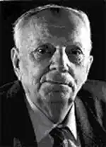

ЮЩЕНКО Олекса Якович народився 2 серпня 1917 р. у с. Хорунжівка Недригайлівського району Сумської області. Закінчив філологічний факультет Ніжинського учительського інституту.
Учасник Великої Вітчизняної війни. Член Спілки письменників з 1944 р. Лауреат літературних премії ім. П.Тичини, М.Хвильового, М.Коцюбинського, П.Артеменка.
Автор багатьох збірок поезій, нарисів, спогадів, серед них — "До рідної землі", Моя весна", "над широким Дніпром", "Шевченко йде по світу","Материне серце", "Висока хвиля", "В коханні признаюсь", "Люди і квіти", "Краса землі", "Вирій", "Сповідь", "Тиша в росянім вінку", "По канві життя", "Барвінкова сивина", "Двері в прожите", "Побачення з красою", збірка гумору "Дружнім пером". В останні роки вийшла книга прози "Хорунжівка — село моє", поезій "Стежка до людських сердець", "Гомери України", "Зоря Миколи Хвильового". Книги споминів, есеїв — "В пам'яті моїй", "Безмертники". У 2000 р. побачила світ збірка поезій "Пізня осінь". Нагороджений медалями та Почесними Грамотами Президії Верховної Ради України, Білорусії, Чувашії. Заслужений працівник культури Білорусії. Заслужений діяч мистецтв України.